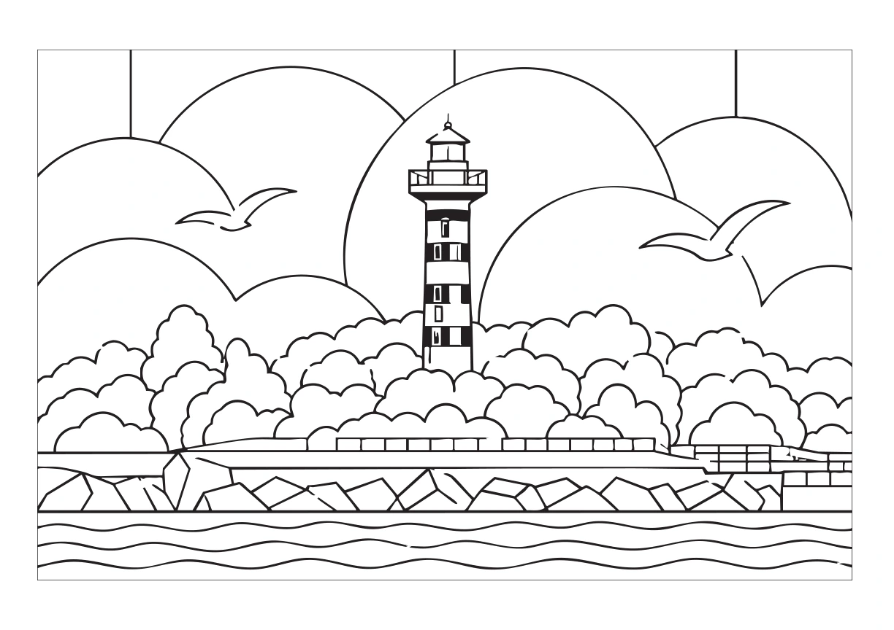
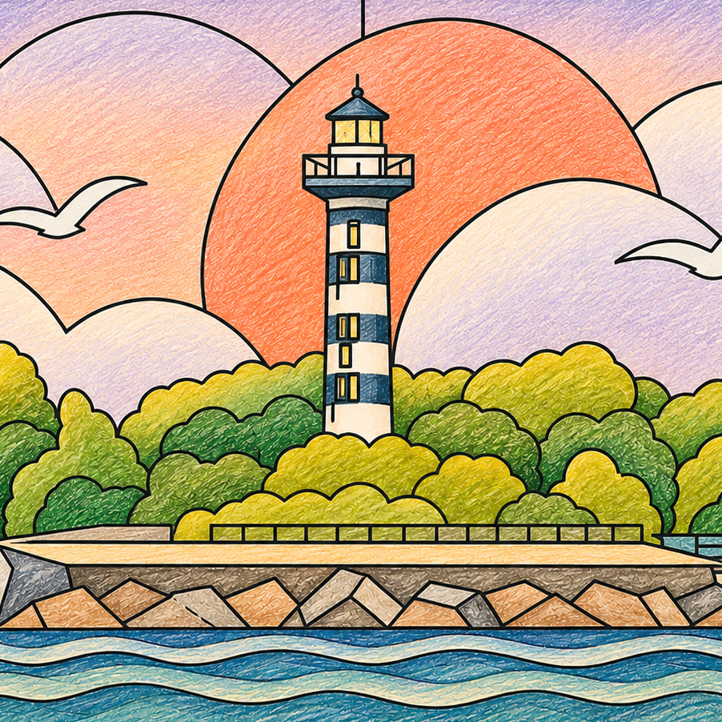

Meridianas Sailing Ship
Built in Finland in 1948, Meridianas is a historic sailing ship that once trained maritime cadets. Today, permanently moored on the Danė River, it is one of Klaipėda’s most recognisable symbols.
Discover the architecture, neighbourhoods and everyday icons of Klaipėda through clean Bauhaus-inspired line illustrations, ready for your colours.
From Meridianas Sailing Ship to Klaipėda’s Hidden Sculptures, this edition explores the sights, local culture and visual character of Klaipėda through a gallery of line illustrations.
Designed for adults who love travel, architecture and creative downtime, the pages use bold composition and open spaces for mindful colouring.
VIEW THE KLAIPĖDA BOOK

PREVIEW: KLAIPĖDA · LINE ART & COLOUR
Discover the places and details that inspired the illustrations in this edition.
Built in Finland in 1948, Meridianas is a historic sailing ship that once trained maritime cadets. Today, permanently moored on the Danė River, it is one of Klaipėda’s most recognisable symbols.
Overlooking Theatre Square, this historic theatre traces its roots to the 19th century. It remains a centre of cultural life and one of Klaipėda’s most important architectural landmarks.
Unveiled in 1912, this fountain honours the poet Simon Dach and his famous song about Ännchen von Tharau. Its graceful statue is a beloved symbol of Klaipėda’s Theatre Square.
Established as a major trading harbour centuries ago, Klaipėda Port is Lithuania’s principal seaport. Its towering cranes and busy terminals reflect the city’s long maritime heritage and modern economic importance.
Extending into the Baltic Sea near Melnragė, the Northern Pier offers views of passing ships, the harbour entrance and the open sea.
Dating back to the city’s foundation in 1252, Klaipėda’s Old Town is known for its German-influenced architecture, timber-framed buildings and cobbled streets. Its historic character reflects centuries of Baltic trading traditions.
First established in the 19th century, Biržos Bridge crosses the Danė River in the heart of Klaipėda. Its movable structure recalls the city’s maritime past, when vessels regularly travelled through the central waterway.
Founded in 1991, Klaipėda University occupies historic red-brick buildings that once served as military barracks. The campus combines distinctive Prussian-era architecture with the city’s modern academic life.
Located on the Curonian Spit, Smiltynė is famous for its sandy Baltic coastline, pine forests and peaceful dunes. Easily reached by ferry, it offers a natural escape just minutes from Klaipėda’s city centre.
Ferry services connect Klaipėda with Smiltynė across the Curonian Lagoon, providing access to the Curonian Spit. The short crossing is an essential part of local transport and a memorable experience for visitors.
Named after the historic Friedrich district, Friedrich Passage is a charming courtyard complex in Klaipėda’s Old Town. Its restaurants, cafés and restored architecture create a lively meeting place with a distinctive historic atmosphere.
Fried cheese fingers are a beloved Klaipėda speciality, closely associated with the city’s lively pub culture and brewing traditions. Crispy on the outside and filled with melted cheese, they are traditionally served with dipping sauce and enjoyed alongside local beer.
Opened in 1984, Klaipėda’s Museum of Clocks explores the fascinating history of timekeeping. Its collection features everything from ancient methods of measuring time to intricate mechanical clocks.
Located in the historic Švyturys brewery complex, B-House celebrates Klaipėda’s longstanding brewing traditions. The brewery’s history dates back to 1784, making it an important part of the city’s industrial heritage.
First established in the 18th century, Klaipėda’s lighthouse has long helped guide ships towards the Baltic port. Its distinctive striped tower remains an important maritime landmark near Melnragė.
Opened in 1994 as part of the Lithuanian Sea Museum, the Dolphinarium is one of Klaipėda’s best-known attractions. It offers dolphin presentations and educational activities focused on marine life.
From the mysterious Black Ghost and Magical Mouse to the charming Cat Klaipėdis, mythical Dragon and graceful Little Mermaid, Klaipėda’s sculptures bring local legends and stories to life. These unique works of art transform the city into an open-air gallery full of hidden treasures.
Explore the Klaipėda edition and the wider Page Craft Studio city colouring book collection.